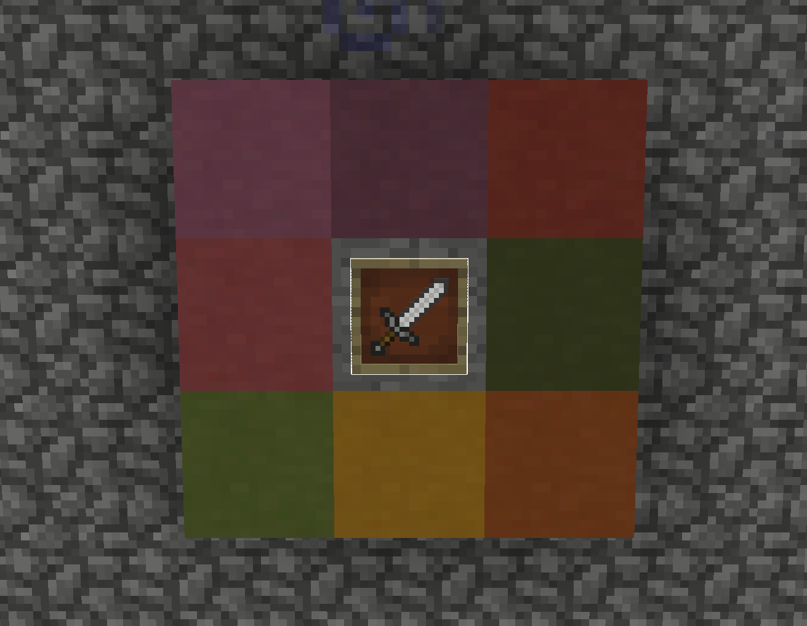
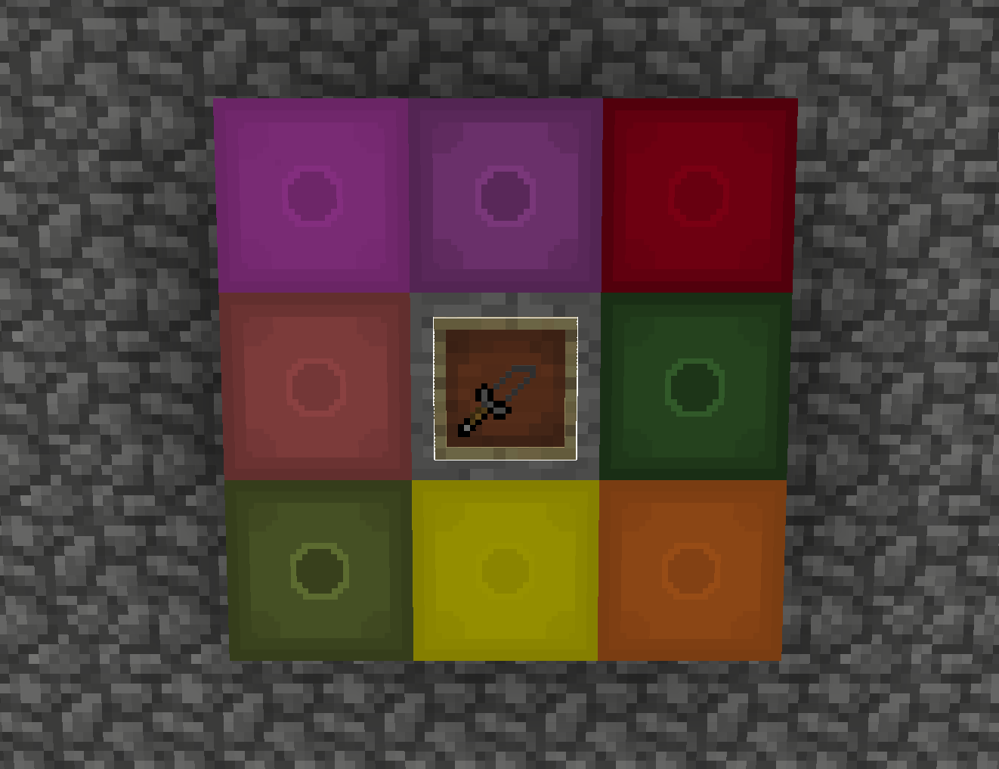

WELCOME!
What is a Resorce Pack?
A Minecraft resource pack is a collection of files that can be used to customize the visual aspects of Minecraft. Resource packs allow players to change the look of blocks, items, and entities (mobs). They are a popular way for Minecraft players to personalize their gaming experience to suit their preferences.
Resource packs come in various resolutions, ranging from low-resolution (16x16 pixels) to high-resolution (512x512 pixels or more). The higher the resolution, the more detailed textures can become, but they may also require more computer resources to run smoothly. by default any Minecraft texture is 16x16.
Players can install and activate resource packs within the game's settings to change the way Minecraft looks.
It's important to note that resource packs are different from mods. While resource packs focus on altering the game's appearance, mods (modifications) can add new gameplay features, mechanics, and functionalities to the game.


without resorce packs
with resorce packs